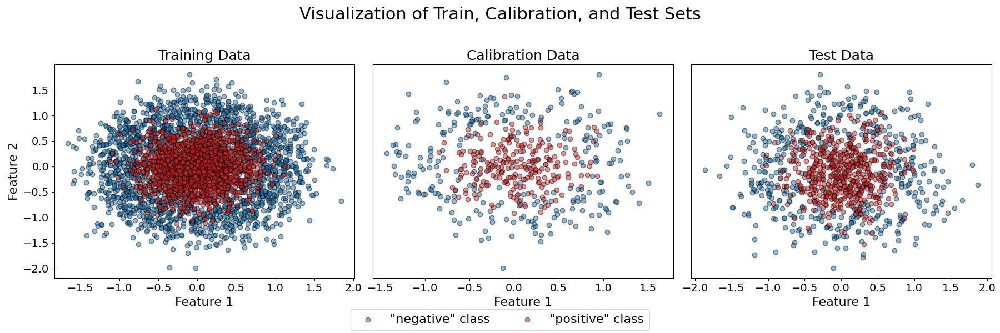
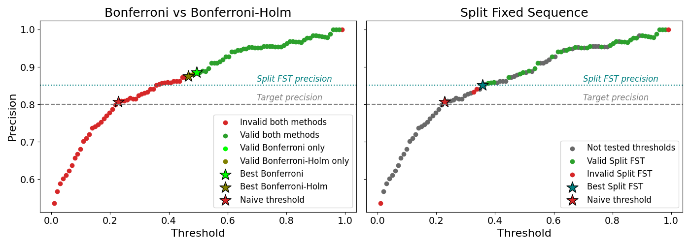

Note
Click here to download the full example code
Split Fixed Sequence Testing for Precision Control under Multiple Testing¶
This example demonstrates how to control a non-monotonic risk such as 1 − precision in binary classification using multiple family-wise error rate (FWER) procedures, with a particular focus on Split Fixed Sequence Testing (SFST).
We compare three approaches:
"bonferroni": classical Bonferroni correction, valid under any risk structure and parameter space, but generally conservative."bonferroni_holm": stepwise multiple testing procedure that is also valid in full generality and typically less conservative than Bonferroni."split_fixed_sequence": Split Fixed Sequence Testing (SFST), which first learns an order over candidate thresholds on an independent dataset and then tests them sequentially on the calibration set.
The main difficulty is that precision is generally non-monotonic with respect to the decision threshold. As a result, classical Fixed Sequence Testing (FST) cannot be applied directly. SFST circumvents this limitation by learning a testing order on separate data, allowing sequential testing while preserving valid statistical guarantees.
The applicability of each FWER method depends on the structure of the problem. The table below summarizes the conditions under which each procedure can be applied (e.g., monotonic or non-monotonic risks, multiple risks, multiple parameters).
The "Conservatism level" column provides a qualitative indication of how restrictive the method is: more conservative procedures tend to select smaller sets of valid parameters and may lead to solutions achieving a risk well below the target level in order to guarantee validity.
Note that Bonferroni is the default FWER control method due to its simplicity and broad applicability across problem settings.
+-----------------+------------------------+--------------------+------------------------+----------------+---------------------+ | Method | Conservatism level | Monotonic risk | Non-monotonic risk | Multi-risk | Multi-parameter | +-----------------+------------------------+--------------------+------------------------+----------------+---------------------+ | Bonferroni | ➕➕➕➕ | ✅ | ✅ | ✅ | ✅ | +-----------------+------------------------+--------------------+------------------------+----------------+---------------------+ | Bonferroni-Holm | ➕➕➕ | ✅ | ✅ | ✅ | ✅ | +-----------------+------------------------+--------------------+------------------------+----------------+---------------------+ | Split FST | ➕➕ | ✅ | ✅ | ✅ | ✅ | +-----------------+------------------------+--------------------+------------------------+----------------+---------------------+
Using the same classifier, dataset, and target precision, we illustrate:
- why naive threshold selection is unreliable,
- how multiple testing affects statistical guarantees,
- how different FWER procedures impact the set of valid thresholds,
- and why SFST can often identify better thresholds than classical corrections.
Split Fixed Sequence Testing requires learning an order in which candidate thresholds will be tested. This order must be estimated on independent data to avoid selection bias.
We therefore split the calibration dataset into two disjoint subsets:
- a "learn" subset used exclusively to estimate the testing order
- a "calibration" subset used exclusively to compute statistical guarantees
This separation is essential. Reusing the same data for both steps would lead to optimistic bias and would invalidate the FWER guarantees of the procedure.
# sphinx_gallery_thumbnail_number = 2
import matplotlib.pyplot as plt
import numpy as np
from sklearn.datasets import make_circles
from sklearn.metrics import precision_score
from sklearn.model_selection import train_test_split
from sklearn.neural_network import MLPClassifier
from mapie.risk_control import BinaryClassificationController
from mapie.utils import train_conformalize_test_split
RANDOM_STATE = 42
First, load the dataset and then split it into training, calibration (for conformalization), and test sets.
X, y = make_circles(n_samples=5000, noise=0.3, factor=0.3, random_state=RANDOM_STATE)
(X_train, X_calib, X_test, y_train, y_calib, y_test) = train_conformalize_test_split(
X,
y,
train_size=0.7,
conformalize_size=0.1,
test_size=0.2,
random_state=RANDOM_STATE,
)
# Plot the three datasets to visualize the distribution of the two classes.
fig, axes = plt.subplots(1, 3, figsize=(18, 6))
titles = ["Training Data", "Calibration Data", "Test Data"]
datasets = [(X_train, y_train), (X_calib, y_calib), (X_test, y_test)]
for i, (ax, (X_data, y_data), title) in enumerate(zip(axes, datasets, titles)):
ax.scatter(
X_data[y_data == 0, 0],
X_data[y_data == 0, 1],
edgecolors="k",
c="tab:blue",
label='"negative" class',
alpha=0.5,
)
ax.scatter(
X_data[y_data == 1, 0],
X_data[y_data == 1, 1],
edgecolors="k",
c="tab:red",
label='"positive" class',
alpha=0.5,
)
ax.set_title(title, fontsize=18)
ax.set_xlabel("Feature 1", fontsize=16)
ax.tick_params(labelsize=14)
if i == 0:
ax.set_ylabel("Feature 2", fontsize=16)
else:
ax.set_ylabel("")
ax.set_yticks([])
handles, labels = axes[0].get_legend_handles_labels()
fig.legend(
handles,
labels,
loc="lower center",
bbox_to_anchor=(0.5, -0.01),
ncol=2,
fontsize=16,
)
plt.suptitle("Visualization of Train, Calibration, and Test Sets", fontsize=22)
plt.tight_layout(rect=[0, 0.05, 1, 0.95])
plt.show()

Second, fit a Multi-layer Perceptron classifier on the training data.
Next, we initialize BinaryClassificationController
with the estimator probability function clf.predict_proba, the
"precision" performance metric, a target precision level, and a
confidence level. We then calibrate it to compute thresholds that are
statistically guaranteed to satisfy the target metric on unseen data using
different FWER control methods, specified via the fwer_method parameter
of the controller:
"bonferroni": classical Bonferroni correction, valid under any risk structure and parameter space, but generally conservative."bonferroni_holm": stepwise multiple testing procedure that is also valid in full generality and typically less conservative than Bonferroni."split_fixed_sequence": Split Fixed Sequence Testing (SFST), which first learns an order over candidate thresholds on an independent dataset and then tests them sequentially on the calibration set.
Unlike recall, precision is generally non-monotonic with respect to the decision threshold. Therefore the standard Fixed Sequence Testing (FST) procedure cannot be applied directly. The split variant circumvents this limitation by learning a testing order on separate data, which allows sequential testing while preserving statistical guarantees.
In practice, we expect Bonferroni to be the most conservative, Holm to lie in between, and Split Fixed Sequence to often yield more powerful results when the learned ordering prioritizes promising thresholds.
target_precision = 0.8
confidence_level = 0.9
bcc_bonferroni = BinaryClassificationController(
clf.predict_proba,
"precision",
target_level=target_precision,
confidence_level=confidence_level,
list_predict_params=np.linspace(0.01, 0.99, 100),
fwer_method="bonferroni",
)
bcc_bonferroni.calibrate(X_calib, y_calib)
bcc_bonferroni_holm = BinaryClassificationController(
clf.predict_proba,
"precision",
target_level=target_precision,
confidence_level=confidence_level,
list_predict_params=np.linspace(0.01, 0.99, 100),
fwer_method="bonferroni_holm",
)
bcc_bonferroni_holm.calibrate(X_calib, y_calib)
bcc_sfst = BinaryClassificationController(
clf.predict_proba,
"precision",
target_level=target_precision,
confidence_level=confidence_level,
list_predict_params=np.linspace(0.01, 0.99, 100),
fwer_method="split_fixed_sequence",
)
X_calib_remaining, X_learn, y_calib_remaining, y_learn = train_test_split(
X_calib,
y_calib,
test_size=0.3,
random_state=RANDOM_STATE,
)
bcc_sfst.learn_fixed_sequence_order(
X_learn=X_learn, y_learn=y_learn, beta_grid=np.logspace(-25, 0, 1000)
)
bcc_sfst.calibrate(X_calib_remaining, y_calib_remaining)
Out:
Note that, in the case of SFST, the controller has first learned a deterministic
order of thresholds using learn_fixed_sequence_order method.
Second, during calibration with the calibrate method,
it has tested them sequentially until rejection.
The important difference compared to Bonferroni correction, is that SFST tests only a subset of prediction parameters, with the most promising ones first.
print(
f"Thresholds found that guarantee a precision of at least {target_precision} with a confidence of {confidence_level}:\n"
f"- Bonferroni correction: {len(bcc_bonferroni.valid_predict_params)} valid thresholds. The best threshold maximizing recall is: {bcc_bonferroni.best_predict_param:.3f}\n"
f"- Split FST procedure: {len(bcc_sfst.valid_predict_params)} valid thresholds. The best threshold maximizing recall is: {bcc_sfst.best_predict_param:.3f}\n"
f"- Holm-Bonferroni method: {len(bcc_bonferroni_holm.valid_predict_params)} valid thresholds. The best threshold maximizing recall is: {bcc_bonferroni_holm.best_predict_param:.3f}\n"
)
Out:
Thresholds found that guarantee a precision of at least 0.8 with a confidence of 0.9:
- Bonferroni correction: 50 valid thresholds. The best threshold maximizing recall is: 0.495
- Split FST procedure: 38 valid thresholds. The best threshold maximizing recall is: 0.356
- Holm-Bonferroni method: 53 valid thresholds. The best threshold maximizing recall is: 0.465
The plot below shows how precision varies with the decision threshold and which thresholds are statistically valid under each FWER control method. Colors indicate agreement or disagreement between methods, and stars mark the best valid threshold selected by each procedure as well as the naive threshold.
tested_thresholds = bcc_bonferroni._predict_params
tested_thresholds_sfst = bcc_sfst._learned_fixed_sequence
non_tested_threshold_sfst = tested_thresholds[
~np.isin(tested_thresholds, tested_thresholds_sfst)
]
proba_positive_class = clf.predict_proba(X_calib)[:, 1]
precisions = np.full(len(tested_thresholds), np.inf)
for i, threshold in enumerate(tested_thresholds):
y_pred = (proba_positive_class >= threshold).astype(int)
precisions[i] = precision_score(y_calib, y_pred)
naive_threshold_index = np.argmin(
np.where(precisions >= target_precision, precisions - target_precision, np.inf)
)
valid_index_bonferroni = np.array(
[t in bcc_bonferroni.valid_predict_params for t in tested_thresholds]
)
valid_index_sfst = np.array(
[t in bcc_sfst.valid_predict_params for t in tested_thresholds]
)
valid_index_bonferroni_holm = np.array(
[t in bcc_bonferroni_holm.valid_predict_params for t in tested_thresholds]
)
best_thr_index_bonferroni = np.where(
tested_thresholds == bcc_bonferroni.best_predict_param
)[0][0]
best_thr_index_sfst = np.where(tested_thresholds == bcc_sfst.best_predict_param)[0][0]
best_thr_index_bonferroni_holm = np.where(
tested_thresholds == bcc_bonferroni_holm.best_predict_param
)[0][0]
fig, axes = plt.subplots(1, 2, figsize=(14, 5), sharey=True)
ax_left, ax_right = axes
# LEFT PANEL — Bonferroni vs Bonferroni-Holm
valid_all_left = valid_index_bonferroni & valid_index_bonferroni_holm
invalid_all_left = ~valid_index_bonferroni & ~valid_index_bonferroni_holm
ax_left.scatter(
tested_thresholds[invalid_all_left],
precisions[invalid_all_left],
c="tab:red",
label="Invalid both methods",
)
ax_left.scatter(
tested_thresholds[valid_all_left],
precisions[valid_all_left],
c="tab:green",
label="Valid both methods",
)
ax_left.scatter(
tested_thresholds[valid_index_bonferroni & ~valid_index_bonferroni_holm],
precisions[valid_index_bonferroni & ~valid_index_bonferroni_holm],
c="lime",
label="Valid Bonferroni only",
)
ax_left.scatter(
tested_thresholds[valid_index_bonferroni_holm & ~valid_index_bonferroni],
precisions[valid_index_bonferroni_holm & ~valid_index_bonferroni],
c="olive",
label="Valid Bonferroni-Holm only",
)
ax_left.scatter(
tested_thresholds[best_thr_index_bonferroni],
precisions[best_thr_index_bonferroni],
c="lime",
marker="*",
edgecolors="k",
s=300,
label="Best Bonferroni",
)
ax_left.scatter(
tested_thresholds[best_thr_index_bonferroni_holm],
precisions[best_thr_index_bonferroni_holm],
c="olive",
marker="*",
edgecolors="k",
s=300,
label="Best Bonferroni-Holm",
)
ax_left.scatter(
tested_thresholds[naive_threshold_index],
precisions[naive_threshold_index],
c="tab:red",
marker="*",
edgecolors="k",
s=300,
label="Naive threshold",
)
ax_left.axhline(precisions[best_thr_index_sfst], color="teal", linestyle="dotted")
ax_left.text(
0.7,
precisions[best_thr_index_sfst] + 0.01,
"Split FST precision",
color="teal",
fontstyle="italic",
fontsize=12,
)
ax_left.axhline(target_precision, color="gray", linestyle="--")
ax_left.text(
0.7,
target_precision + 0.01,
"Target precision",
color="gray",
fontstyle="italic",
fontsize=12,
)
ax_left.axhline(target_precision, color="gray", linestyle="--")
ax_left.set_title("Bonferroni vs Bonferroni-Holm", fontsize=18)
ax_left.set_xlabel("Threshold", fontsize=16)
ax_left.set_ylabel("Precision", fontsize=16)
ax_left.tick_params(labelsize=14)
ax_left.legend(fontsize=12)
# RIGHT PANEL — Split Fixed Sequence Testing
tested_mask_sfst = np.isin(tested_thresholds, tested_thresholds_sfst)
ax_right.scatter(
tested_thresholds[~tested_mask_sfst],
precisions[~tested_mask_sfst],
c="dimgray",
label="Not tested thresholds",
)
ax_right.scatter(
tested_thresholds[tested_mask_sfst & valid_index_sfst],
precisions[tested_mask_sfst & valid_index_sfst],
c="tab:green",
label="Valid Split FST",
)
ax_right.scatter(
tested_thresholds[tested_mask_sfst & ~valid_index_sfst],
precisions[tested_mask_sfst & ~valid_index_sfst],
c="tab:red",
label="Invalid Split FST",
)
ax_right.scatter(
tested_thresholds[best_thr_index_sfst],
precisions[best_thr_index_sfst],
c="teal",
marker="*",
edgecolors="k",
s=300,
label="Best Split FST",
)
ax_right.scatter(
tested_thresholds[naive_threshold_index],
precisions[naive_threshold_index],
c="tab:red",
marker="*",
edgecolors="k",
s=300,
label="Naive threshold",
)
ax_right.axhline(precisions[best_thr_index_sfst], color="teal", linestyle="dotted")
ax_right.text(
0.7,
precisions[best_thr_index_sfst] + 0.01,
"Split FST precision",
color="teal",
fontstyle="italic",
fontsize=12,
)
ax_right.axhline(target_precision, color="gray", linestyle="--")
ax_right.text(
0.7,
target_precision + 0.01,
"Target precision",
color="gray",
fontstyle="italic",
fontsize=12,
)
ax_right.axhline(target_precision, color="gray", linestyle="--")
ax_right.set_title("Split Fixed Sequence", fontsize=18)
ax_right.set_xlabel("Threshold", fontsize=16)
ax_right.tick_params(labelsize=14)
ax_right.legend(fontsize=12)
plt.tight_layout()
plt.show()

Finally, we compare test-set precision obtained with the naive threshold and with the best valid threshold selected by each FWER method, alongside their calibration-set recalls.
proba_positive_class_test = clf.predict_proba(X_test)[:, 1]
y_pred_naive = (
proba_positive_class_test >= tested_thresholds[naive_threshold_index]
).astype(int)
print(
"With the naive threshold, the precision is:\n "
f"- {precisions[naive_threshold_index]:.3f} on the calibration set\n "
f"- {precision_score(y_test, y_pred_naive):.3f} on the test set."
)
print(
"\n\nWith Bonferroni correction, the precision is:\n "
f"- {precisions[best_thr_index_bonferroni]:.3f} on the calibration set\n "
f"- {precision_score(y_test, bcc_bonferroni.predict(X_test)):.3f} on the test set."
)
print(
"\n\nWith Bonferroni-Holm, the precision is:\n "
f"- {precisions[best_thr_index_bonferroni_holm]:.3f} on the calibration set\n "
f"- {precision_score(y_test, bcc_bonferroni_holm.predict(X_test)):.3f} on the test set."
)
print(
"\n\nWith Split FST procedure, the precision is:\n "
f"- {precisions[best_thr_index_sfst]:.3f} on the calibration set\n "
f"- {precision_score(y_test, bcc_sfst.predict(X_test)):.3f} on the test set."
)
Out:
With the naive threshold, the precision is:
- 0.807 on the calibration set
- 0.769 on the test set.
With Bonferroni correction, the precision is:
- 0.886 on the calibration set
- 0.856 on the test set.
With Bonferroni-Holm, the precision is:
- 0.876 on the calibration set
- 0.855 on the test set.
With Split FST procedure, the precision is:
- 0.851 on the calibration set
- 0.815 on the test set.
Risk control provides statistical guarantees on unseen data, unlike naive threshold selection. Although the naive threshold may appear to satisfy the target precision on a given dataset, it comes with no guarantee that this performance will generalize. In this example, the naive choice actually leads to lower precision on the test set, illustrating how apparent success can be due to chance rather than a reliable statistical guarantee.
In contrast, thresholds selected via risk control are backed by a confidence guarantee: with the prescribed probability, their true precision on new data will meet the target level.
As expected, Bonferroni is the most conservative procedure (fewest valid thresholds), Split Fixed Sequence Testing is typically the least conservative when its assumptions hold (largest valid set), and Bonferroni-Holm lies in between, offering a practical compromise between power and generality.
Total running time of the script: ( 0 minutes 2.124 seconds)
Download Python source code: plot_split_fixed_sequence_testing_fwer_method_for_precision_control.py
Download Jupyter notebook: plot_split_fixed_sequence_testing_fwer_method_for_precision_control.ipynb